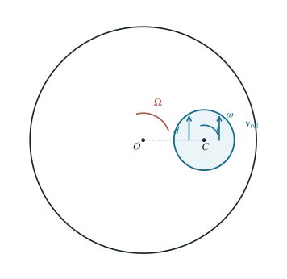

偏心小圆盘在转盘上的稳定自转与维持力矩
相对速度场使小盘自转趋于与大盘同步，此时接触摩擦的合力臂给出电机力矩。
1 题目
1.1 物理情境
半径为 的水平大圆盘绕竖直中心轴 以角速度 匀速转动。半径为 、质量为 的小圆盘与其表面接触，其盘心 离轴 的距离为 。
1.2 物理过程
小盘初放下时不自转。接触处的动摩擦使小盘获得自转；讨论自转角速度达到稳定值时的速度场，并求为维持大盘匀速转动所需的驱动力矩。
1.3 已知参数和理想化假设
。两盘表面法向压强近似均匀，总支持力为 ，动摩擦系数为 。为使给定的盘心距 真正保持恒定，另有作用于小盘盘心的理想定位约束；该约束平衡小盘的合摩擦力，但不提供绕盘心的力矩。，取其方向为正。
1.4 求解目标
（1）求小盘稳定自转的角速度 。
（2）求维持大盘以 转动所需额外电机力矩。

圆心距和两半径按 绘制；两处箭头表示稳定态所有接触点共有的相对滑动方向。
2 思路与提示
沿小圆盘任一直径选取相对圆心对称的两个微元，比较它们相对大圆盘的滑动速度与摩擦力矩。
3 解答展开 / 收起
3.1 写出整片接触区的相对速度
令 表示从 指向 的位置矢量， 表示小盘上某接触点相对 的位置矢量。大盘该处的速度为 ；盘心固定的小盘该处速度为 。两盘表面的相对速度为
因此“同一接触区只存在一个相对速度”一般不成立；其方向随位置而变。
3.2 证明同步自转是稳定值
取均匀法向压强 ，摩擦力面密度为 。把 作为参数，定义
绕小盘心的摩擦力矩为
圆形接触区关于 对称，故 。范数的积分是凸函数，因而 与 同号；当 时小盘受正转矩，当 时受负转矩。唯一稳定自转值为
3.3 求大盘需要补给的力矩
第（1）式在 时简化为与 无关的同一个相对滑动速度：
整片接触区对小盘的摩擦力同向，合力为 ，方向沿大盘运动的切向；其作用线可取通过 ，对小盘盘心无力矩。大盘受到大小相等、方向相反的摩擦力，其对 的阻力矩为
为维持大盘角速度不变，电机必须沿原转向另施加大小为 的驱动力矩。
4 方法与讨论
稳定的是小盘相对固定盘心的自转角速度，并非两表面无滑动；第（5）式仍非零。若撤去题面中明确写出的盘心定位约束，则第（5）式的切向摩擦合力会加速小盘盘心，不能同时维持恒定盘心距 与题设的稳态。